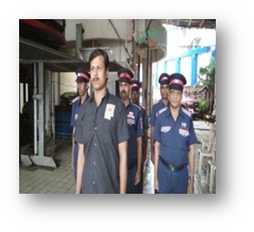
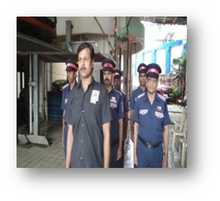

First Aid Training
Our guards are trained in comprehensive first aid techniques, including CPR, emergency wound care, and rapid response. This ensures they're prepared to handle medical emergencies until professional help arrives. Training is updated regularly to meet the latest medical standards.

 
